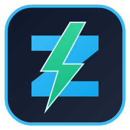

ZynDrivesZero C: drive caching. Zero messy command prompts. Mount multiple cloud accounts as native Windows drive letters (J:, K:, L:) recognized by AI coding agents, IDEs, and Windows Explorer.
Why downloading entire cloud folders or opening command consoles wastes hours.
Everything you need to turn cloud storage into instant local drives.
Mount or unmount all your cloud remotes instantly with a single click, or individual drives as needed.
Configures a zero-overhead Windows registry startup handler so all drives are automatically mounted upon logon.
Optimized with --links and atomic writes so Antigravity, Codex, Cursor, and git work seamlessly on virtual mounts.
Uses intelligent transient memory buffers and customizable chunk sizes, keeping your primary SSD clean.
Live metrics showing total combined cloud space, percent used, free capacity, and live connection health.
Pure native C# WinForms running directly on Windows .NET Framework. Starts in under 20ms with 0% GPU usage.